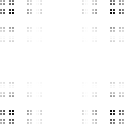
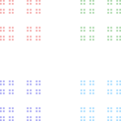

Similarity Dimension
Example Calculations
The shape can be decomposed into N = 4 pieces, each scaled by a factor of
r = 1/3,
so d
s
= Log(4)/Log(3). An
interesting variation
on this occurs if the pieces are scaled by a factor of
r = 1/4.


Return to
Similarity Dimension Exercises
.